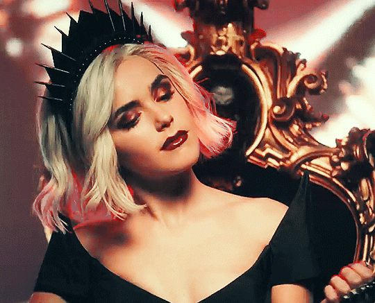
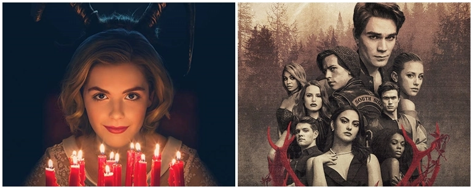
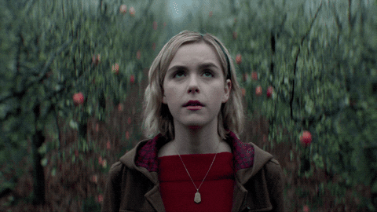
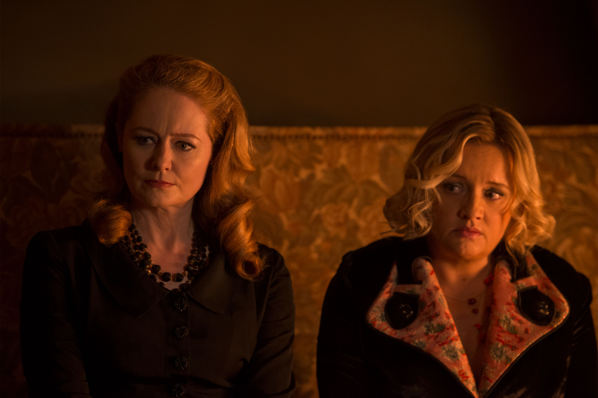
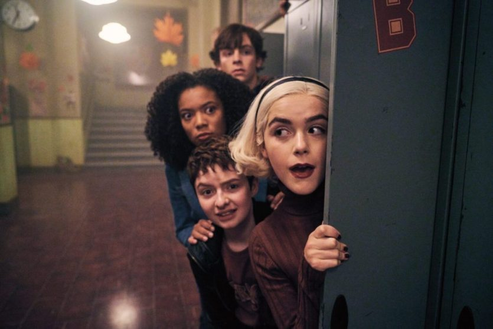
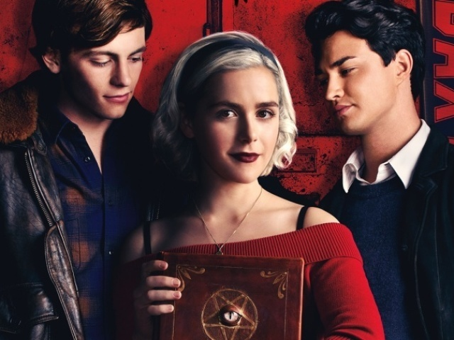
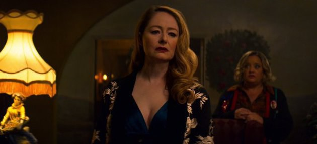
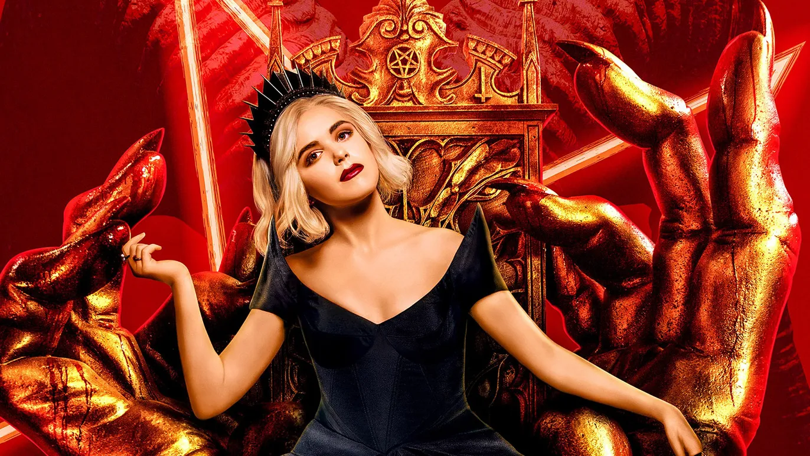

Bem vindos queridos bruxos, estamos aqui hoje para nossa crítica sobre o precioso universo de "O mundo sombrio de Sabrina".
ᨐᨐᨐᨐᨐᨐᨐᨐᨐᨐᨐᨐᨐᨐᨐᨐᨐᨐᨐᨐᨐᨐᨐᨐᨐᨐᨐᨐᨐᨐᨐᨐᨐᨐᨐᨐᨐᨐᨐᨐᨐᨐᨐᨐᨐᨐᨐᨐᨐᨐᨐᨐᨐᨐᨐᨐᨐᨐᨐᨐᨐᨐᨐᨐᨐᨐᨐᨐᨐ
Roberto Aguirre-Sacasa, diretor de criação da Archie, ficou encarregado desta adaptação para o serviço de streaming. Ele também produziu a série “Riverdale” para a locadora vermelha, que se passa no mesmo universo de “Sabrina” e também vem de HQs do estúdio.

Com uma pegada de fantasia e horror sobrenatural temperados com dramas adolescentes, a série trouxe um humor suave para lidar com a cultura e sociedade bruxas, se valendo das mesmas para ancorar críticas e comentários relacionados ao mundo real. Por ter sido produzida para a Netflix, a obra pôde fazer uso de uma classificação indicativa mais alta do que as outras adaptações, sem hesitação em usar sangue e violência, o que ajuda na imersão de realidade.

Outro importante elemento é a maneira como a obra aborda religião e opressão. O Coven (nome dado a um grupo de bruxas que se reúnem com certa frequência), no início, louva Satã, mas o que pode inicialmente parecer adoração ao Mal, se revela a maneira inteligente com a qual série satiriza tirania religiosa, que manipula e reprime seus seguidores para transformá-los em fiéis cegos e obedientes e, assim, explorá-los.

Sabrina (interpretada com gosto pela atriz Kiernan Shipka) se mostra ótima protagonista ao liderar, inadvertidamente, questionamentos sobre os dogmas ultrapassados da Igreja da Noite. Ela defende que bruxos e humanos sejam tratados com igualdade de respeito e dignidade, e seu embate perante o ambiente controlador em que foi criado é bem refletido na realidade do mundo do início do século XXI.

Sendo filha de um bruxo com uma humana, Sabrina quer fazer parte dessas duas sociedades, e tal dualidade é um ponto vital em sua jornada. Daí saem bons diálogos com suas tias Zelda e Hilda (as ótimas Miranda Otto e Lucy Davis, respectivamente), principalmente com a mais velha, que defende as tradições bruxas com fervor, gerando debates intrigantes sobre a necessidade de costumes milenares se adaptarem para tempos modernos.

O lado adolescente floresce em intrigas derivadas de hormônios em combustão, autodescobertas e triângulos amorosos. Este quesito nem sempre é bem equilibrado, principalmente nas duas últimas temporadas. Mesmo assim, o bom elenco consegue cativar o bastante para prender a atenção do público durante cenas altamente piegas.

Contudo, o texto ganha maturidade evitando o maniqueísmo simplório ao tratar de vários temas sociais de peso na série e na realidade. Há bons arcos sobre identidade de gênero, machismo, livre-arbítrio e relacionamentos abusivos, este último explorando a(s) personagem(ns) da atriz Michelle Gomez que, com uma presença magnética em tela, dribla os inúmeros momentos em que é usada como instrumento expositivo.

Entretanto, quando a série tenta usar humor, o texto derrapa demais com falas destoantes dos temas sérios propostos. Mesmo com os esforços dos atores, são momentos que distraem o espectador da tela. As duas últimas temporadas são as mais fracas, infelizmente. A derradeira praticamente transforma a série num procedural insosso, evidenciando a necessidade de encaixar muito material em poucos episódios, talvez devido ao cancelamento precoce da obra. Muitos personagens perdem importância narrativa subitamente, e os temas importantes da primeira metade da série são deixados de lado, resultando numa perda notável de qualidade.

Todavia, a jornada é válida. A criação de mundo é ótima e os personagens são cativantes, apesar de alguns terem arcos apressados ou abandonados. Com bons elementos que espelham o mundo real, os debates sobre liberdade e respeito e seus papéis na evolução de uma sociedade evidenciam que “O Mundo Sombrio de Sabrina” traz a seriedade necessária para uma obra adolescente, convidando-os à autoanálise e pensamento crítico perante o mundo onde vivem.
